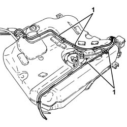
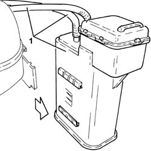
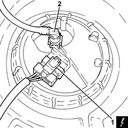
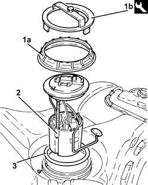
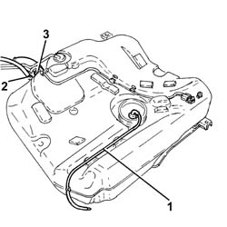
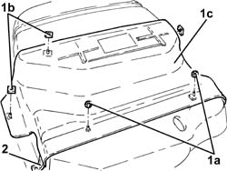
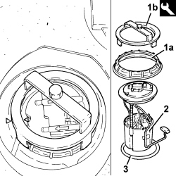

1040A14 FUEL TANK - R + R FOR REPLACEMENT
- Path
- Procedures > 10 ENGINE > 1040 FUEL TANK AND PIPES > 1040A FUEL TANK AND COMPONENTS > 1040A14 FUEL TANK - R + R FOR REPLACEMENT
- Kind
- repair procedure (removal / refitting; the operation number is the code)
- Applies to
- all engines; all production periods
- Interactive page
- https://sloeber94.github.io/elrnDB-fCrm/en/#/194000287
Applies to: engines: 1.8, 2.2; all production periods
 Removing
Removing
 Refitting
Refitting- Position the vehicle on a lift.
- Make sure that the ignition key is in the OFF position, then disconnect the battery terminal (-).
Description | Connector | |
|---|---|---|
- | Battery |
Op. 4450B08 RIGHT REAR WHEEL - R.R
Op. 7055B45 RIGHT REAR WHEEL ARCH LINER - R.R
Op. 1040A30 FUEL FILLER PIPE ASSEMBLY- R + R
Op. 1076B20 REAR EXHAUST SILENCER - R + R
Op. 1076B30 FRONT EXHAUST SILENCER - R + R
Op. 1040A10 FUEL TANK - R + R AND DECANT FUEL
1. Release the fuel vapour inlet and outlet pipes to the activated charcoal filter from the fastenings on the tank.

Applies to: engines: 1.8, 2.2; all production periods
1. Release the activated charcoal filter for fuel vapours from the mount on the tank and remove with the pipes.

Applies to: engines: 1.8, 2.2; all production periods
1. Disconnect the electrical connection from the submerged pump assembly complete with level gauge.
Description | Connector | |
|---|---|---|
1 | Fuel pump and level gauge |
2. Disconnect the rapid connector for the rear fuel supply pipe, submerged pump assembly side complete with level gauge.

Applies to: engines: 1.8, 2.2; all production periods
1. Remove the ring nut (1a) using the tool (1b).
Tool | Description | Function | Validity |
|---|---|---|---|
1870736000 | Spanner | Loosen/tighten ring nut securing submerged pump assembly complete with level gauge |
2. Remove the submerged fuel assembly complete with level gauge control.
3. Remove the O-ring.

Applies to: engines: 1.8, 2.2; all production periods
1. Release the rear fuel supply pipe from the fastenings on the fuel tank and remove it.
2. Loosen the collar and remove the antiregurgitation pipe from the fuel tank.
3. Loosen the collar and remove the fuel filler pipe from the fuel tank.

Applies to: engines: 1.8, 2.2; all production periods
1. Undo nuts (1a), remove clips (1b) and remove the lower fuel tank protection (1c).
2. Remove the fuel tank support belt.

Applies to: engines: 1.8, 2.2; all production periods
Refitting
Removing- Place the fuel tank support belt back in its housing.
- Replace the lower fuel tank protection and secure it using the bands and the nuts.
- Connect the fuel filler pipe to the fuel tank and secure with the collar.
- Connect the antiregurgitation pipe to the fuel tank and secure with the collar.
- Refit the rear fuel delivery pipe to its seat on the tank.
1. Place a new O-Ring seal in the housing on the fuel tank collar and make sure that it is correctly positioned.
2. Position the submerged pump assembly complete with level gauge control in its housing.
3. Tighten the ring nut (3a) securing the submerged pump assembly complete with level gauge using the tool (3b).
Tool | Description | Function | Validity |
|---|---|---|---|
1870736000 | Spanner | Loosen/tighten ring nut securing submerged pump assembly complete with level gauge |
Applies to: engines: 1.8, 2.2; all production periods
- Connect the rapid connector for the rear fuel supply pipe, submerged pump assembly side complete with level gauge.
- Connect the electrical connection to the submerged pump assembly complete with level gauge.
- Refit the activated carbon filter for fuel vapours complete with pipes and secure to the bracket on the tank.
- Fasten the fuel vapour inlet and outlet pipes to the activated charcoal filter to the fastenings on the tank.
Op. 1040A10 FUEL TANK - R + R AND DECANT FUEL
Op. 1076B30 FRONT EXHAUST SILENCER - R + R
Op. 1076B20 REAR EXHAUST SILENCER - R + R
Op. 1040A30 FUEL FILLER PIPE ASSEMBLY- R + R
Op. 7055B45 RIGHT REAR WHEEL ARCH LINER - R.R
Op. 4450B08 RIGHT REAR WHEEL - R.R
- Connect the negative battery terminal.
- Remove the vehicle from the lift.
Applies to: engines: 1.9 JTD 8v, 1.9 JTD 16v, 2.4 JTD 20v; all production periods
Removing
Refitting- Position the vehicle on a lift.
- Make sure that the ignition key is in the OFF position, then disconnect the battery terminal (-).
Description | Connector | |
|---|---|---|
- | Battery |
Op. 7050A20 ONE-PIECE REAR SEAT CUSHION - R.R.
Op. 1040A10 FUEL TANK - R + R AND DECANT FUEL
1. Undo the ring nut (1a) using the tool (1b).
Tool | Description | Function | Validity |
|---|---|---|---|
1870736000 | Spanner | Loosen/tighten ring nut securing submerged pump assembly complete with level gauge |
2. Remove the submerged fuel assembly complete with level gauge control.
3. Remove the O-ring.

Applies to: engines: 1.9 JTD 8v, 1.9 JTD 16v, 2.4 JTD 20v; all production periods
Refitting
Removing- Place a new O-Ring seal in the housing on the fuel tank collar and make sure that it is correctly positioned.
- Position the submerged pump assembly complete with level gauge control in its housing.
- Tighten the ring nut securing the submerged pump assembly complete with level gauge using the tool.
Tool | Description | Function | Validity |
|---|---|---|---|
1870736000 | Spanner | Loosen/tighten ring nut securing submerged pump assembly complete with level gauge |
Op. 1040A10 FUEL TANK - R + R AND DECANT FUEL
Op. 7050A20 ONE-PIECE REAR SEAT CUSHION - R.R.
- Connect the negative battery terminal.
- Remove the vehicle from the lift.
Topics linked from this page (9)
- 1040A10 FUEL TANK - R + R AND DECANT FUEL
- 1040A30 FUEL FILLER PIPE ASSEMBLY- R + R
- 1076B20 REAR EXHAUST SILENCER - R + R
- 1076B30 FRONT EXHAUST SILENCER - R + R
- 4450B08 RIGHT REAR WHEEL - R.R
- 7050A20 ONE-PIECE REAR SEAT CUSHION - R.R.
- 7055B45 RIGHT REAR WHEEL ARCH LINER - R.R
- A001 BATTERY
- N040 FUEL PUMP AND LEVEL GAUGE